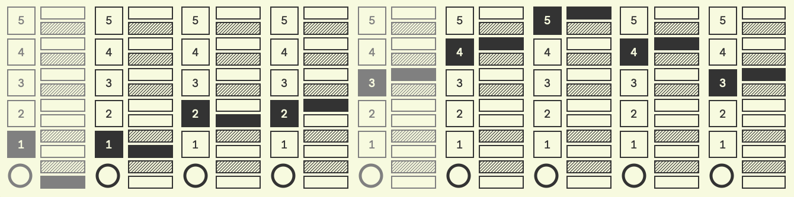
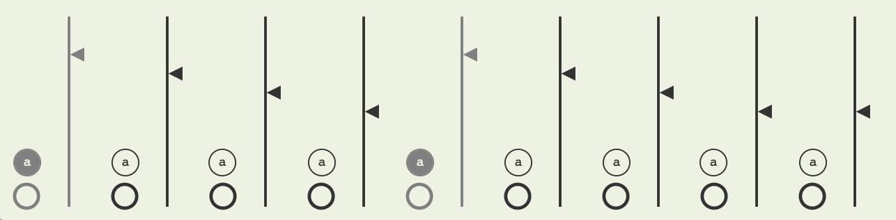
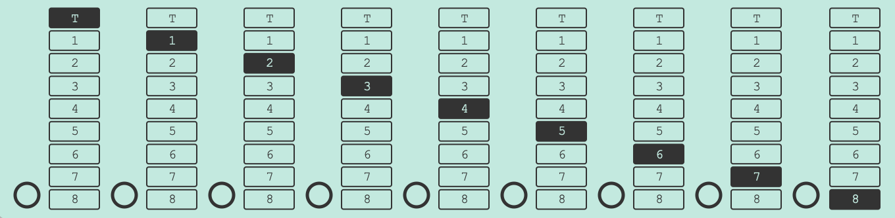

The inspiration behind this sequencer stems from the idea of wanting to play around with patterns and pattern formations, and in doing so to give the user more immediate interaction and allow the musical idea to thrive ... so that one can feel at ease improvising and playing with ideas on the spot.
Also, I hope that it will serve as a neat addition to your Ableton setup, and for those that cannot afford a modular system, to feel closer to having one at a fraction of the cost!
Each step can have its own rhythmic values
Designed from a musician's point of view
You can assign accents to your steps, which you can control independently of the "non-accented" steps
Each step can be routed to a different track/instrument via a bus